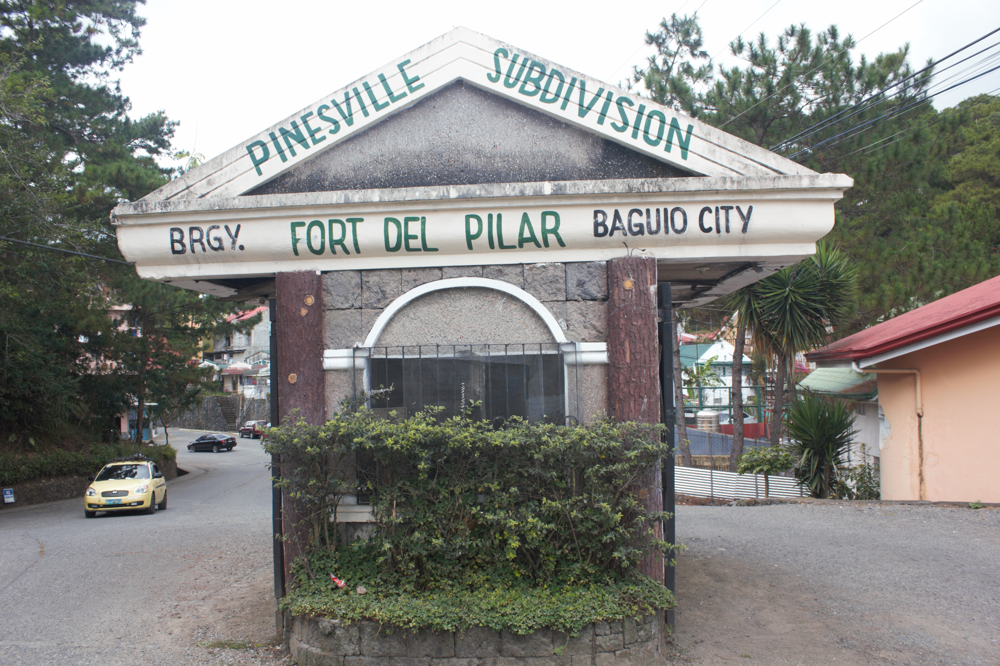
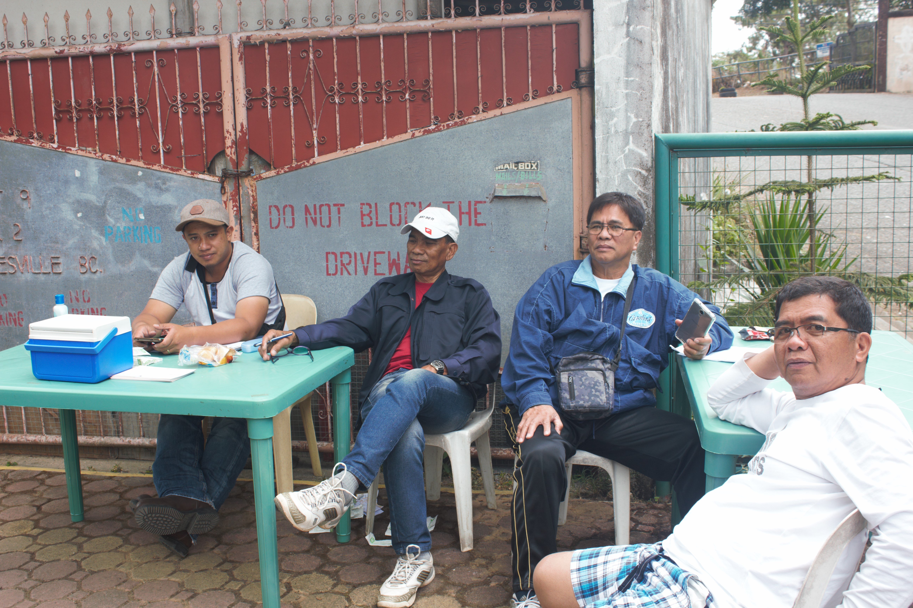
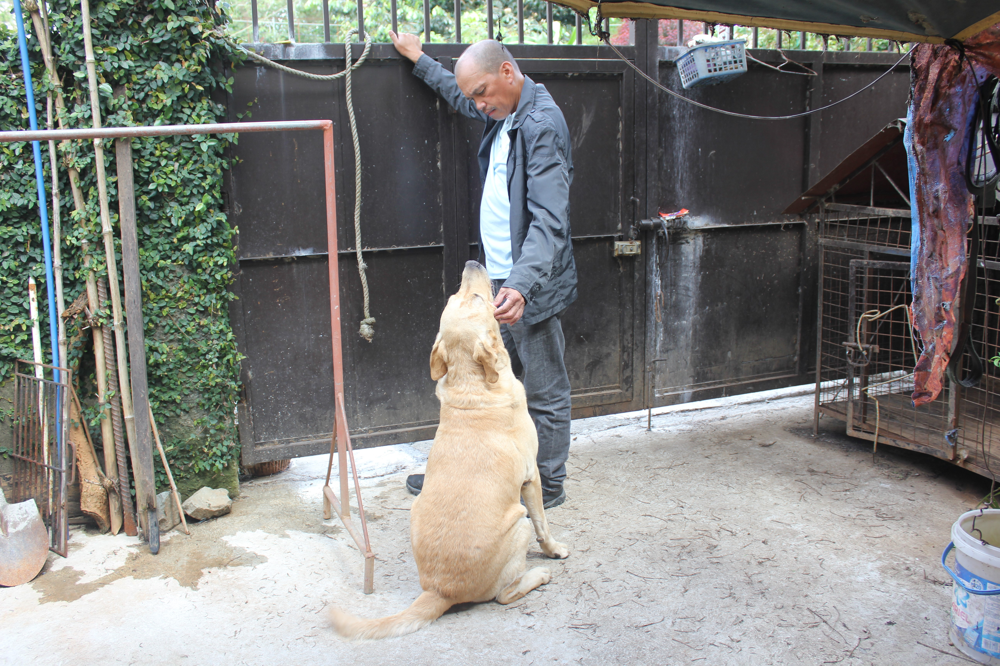
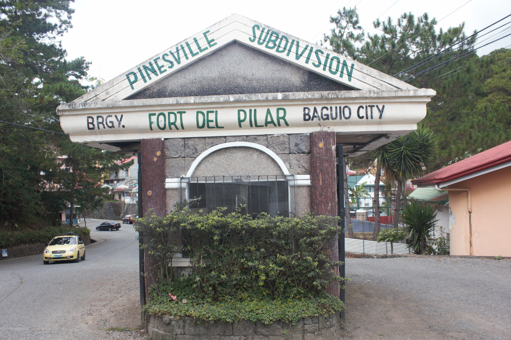
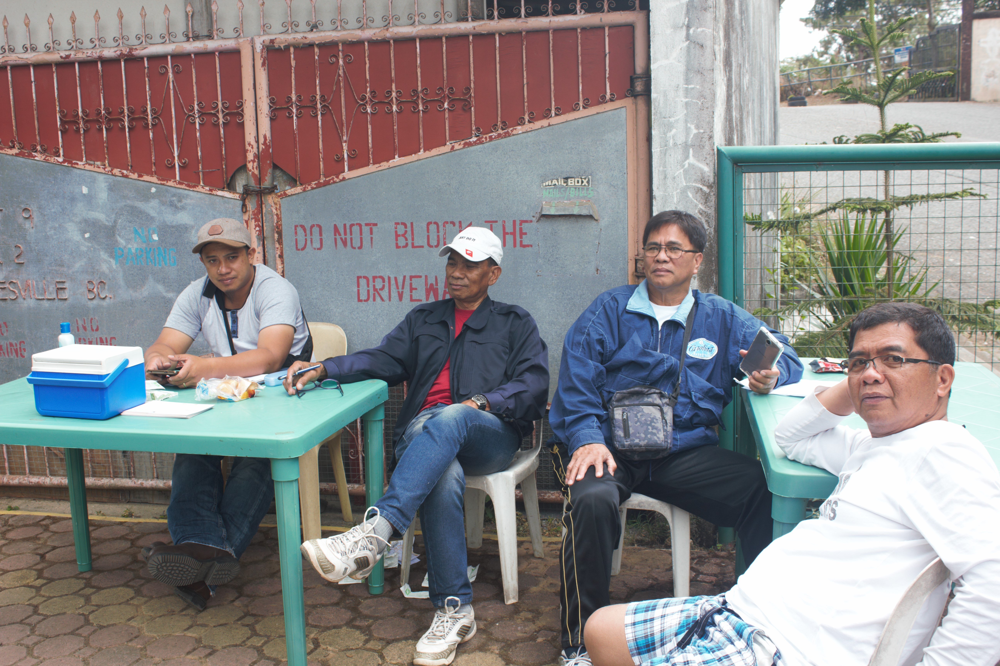
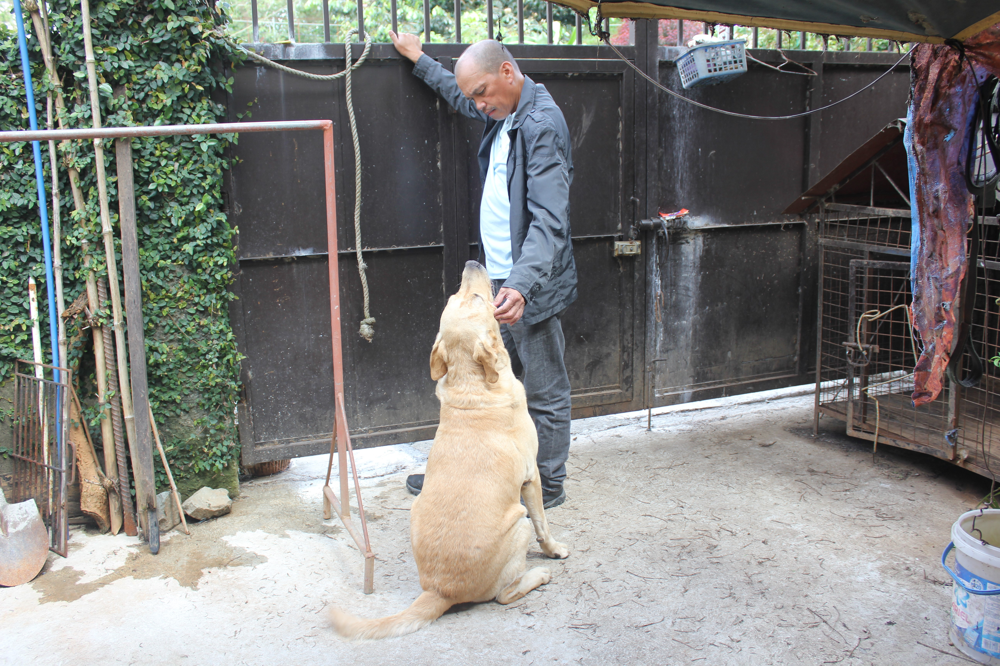

There is a wide variety of animals living in Barangay Fort Del Pilar. From pets to farm animals, different creatures could be found around the area. Sadly, a handful of these animals are left as strays. You could walk around the barangay and see cats or dogs scraping around for food. Not only do these animals pose danger for citizens as they might bite, but also the condition of these animals is simply something no one can live with. Animals should be taken care of and loved because we are higher in the hierarchy. We have the ability to give them better lives. Stray animals have the potential of becoming loving pets.
This is a story from the point of view of one of our members. When going out the house, she always sees this stray dog that freely roams the barangay. The dog is ridden with fleas, thin as a noodle and unsafe from possible dangers. This dog walks around near houses where dogs are tied near the gate. The dog provides some sort of happiness to the dogs inside their abodes. Since our groupmember also has a dog, she always notices this dog kind of talking to her dog. In a weird way, she can see that her dog enjoys this. She then called this dog a jester because it cheers up all the other dogs. She can't adopt this dog though because she already has one. It's just sad that the dog is a stray. The dog could have so much more given to a proper owner. The dog who makes other dogs happy could also be made happier. This is why stray dogs must be given a chance, because you never know what type of happiness they could bring.
As we went around the barangay, we spotted a few cats lurking around. They can be seen hiding in bushes or even under cars. Stray cats, just like stray dogs, also deserve good owners so that they can be given care. This is just one of the cats found in the barangay. There are others which can be adopted.
When walking your dog or any pet for that matter, dog poop is a recurring sight. Not only is it unsightly but some pets also tend to eat them which might cause issues to occur.
Thankfully, these are the only issues. Barangay Fort Del Pilar is notably an animal-friendly barangay and no cases of animal abuse have been reported. Still though, it is good not to stop until there are no issues anymore.
Without issues, we envision that Barangay Fort Del Pilar will progress from an animal-friendly barangay to an animal loving community. Where the difference is that animals are not only allowed to stay but also loved.


 




